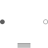

PartialElementaryTwoFlangesAndSupport2Partial model for a component with two rotational 1-dim. shaft flanges and a support used for textual modeling, i.e., for elementary models |

|
Information
This information is part of the Modelica Standard Library maintained by the Modelica Association.
This is a 1-dim. rotational component with two flanges and a support/housing. It is used to build up elementary components of a drive train with equations in the text layer.
If useSupport=true, the support connector is conditionally enabled
and needs to be connected.
If useSupport=false, the support connector is conditionally disabled
and instead the component is internally fixed to ground.
Parameters (1)
| useSupport |
Value: false Type: Boolean Description: = true, if support flange enabled, otherwise implicitly grounded |
|---|
Connectors (3)
Extended by (4)
|
Modelica.Mechanics.Rotational.Components Gear with mesh efficiency and bearing friction (stuck/rolling possible) |
|
|
Modelica.Mechanics.Rotational.Components Ideal gear without inertia |
|
|
Modelica.Mechanics.Rotational.Components Brake based on Coulomb friction |
|
|
Modelica.Mechanics.Rotational.Components Coulomb friction in bearings |